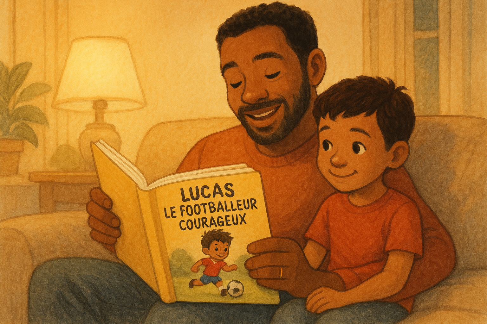
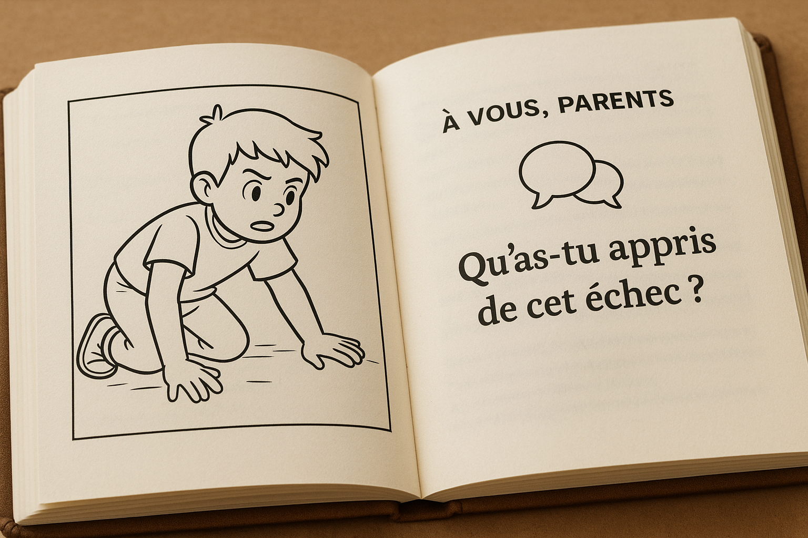
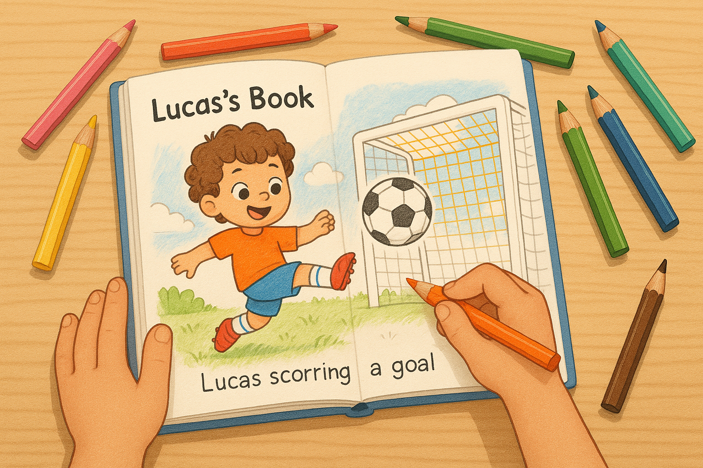

Un moment de complicité éducative
Transformez la lecture en expérience interactive qui développe l'intelligence émotionnelle de votre enfant en 3 étapes
Lisez l'Aventure
Chaque chapitre raconte une histoire inspirante de Lucas. Lisez-la à voix haute avec votre enfant pour partager un moment de complicité et de découverte.
Échangez & Grandissez
À côté de chaque dessin, des questions simples sont proposées. Utilisez-les pour lancer une discussion et aider votre enfant à s'approprier la leçon du jour.
Coloriez le Courage
L'enfant s'approprie l'histoire en coloriant les aventures de Lucas. Un moment créatif qui allie plaisir du football et développement des compétences émotionnelles.
Découvrez comment le football peut devenir une leçon de vie
Feuilletez ces extraits pour vous plonger dans les aventures éducatives de Lucas.
À vous les parents
Rejoignez la communauté des parents qui allient éducation positive et passion du football
Chaque page de Lucas est conçue pour stimuler le dialogue et l'apprentissage :
- Des questions pour encourager la réflexion
- Des activités ludiques pour renforcer les apprentissages
- Des moments de partage en famille
Recevez votre extrait gratuit !
Commencez l'aventure maintenant ! Recevez par email les 3 premières histoires en PDF et le Certificat de "Champion du Cœur" à imprimer.
Un univers en pleine expansion
"Lucas le Footballeur Courageux" n'est que le début. Découvrez notre vision pour faire des "Champions du Cœur" une référence en matière d'éducation positive.
📚 Une Aventure sur 21 Volumes
La série principale est conçue pour accompagner votre enfant sur le long terme, en abordant des thèmes de plus en plus profonds sur la maturité et le leadership.
🌟 6 Séries Dérivées (Spin-Offs ) à Venir
L'univers s'étendra avec de nouveaux héros pour aborder des thèmes variés comme le voyage, la diversité familiale et le leadership féminin.
🎯 Notre Promesse : Une Marque Durable
Nous construisons un univers bienveillant qui pourra se décliner en dessins animés et jeux pour devenir un pilier de l'enfance de vos enfants.